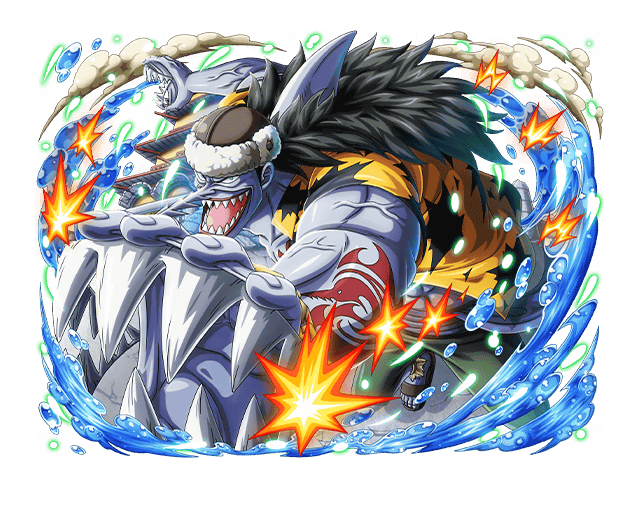
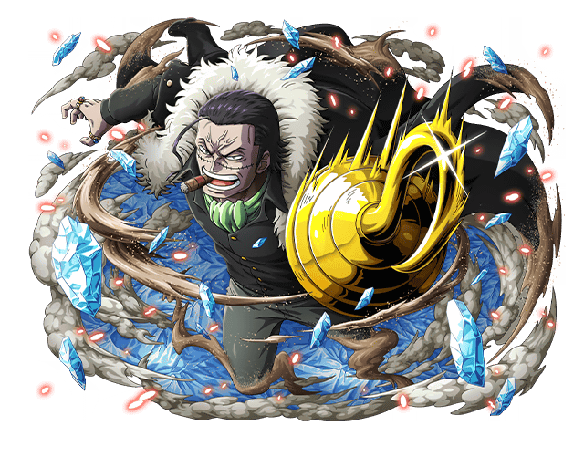
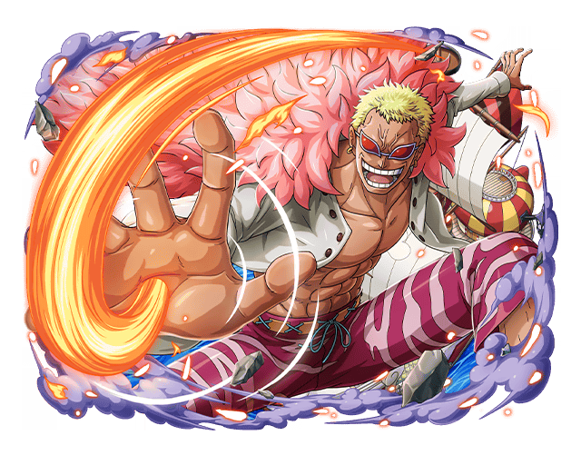
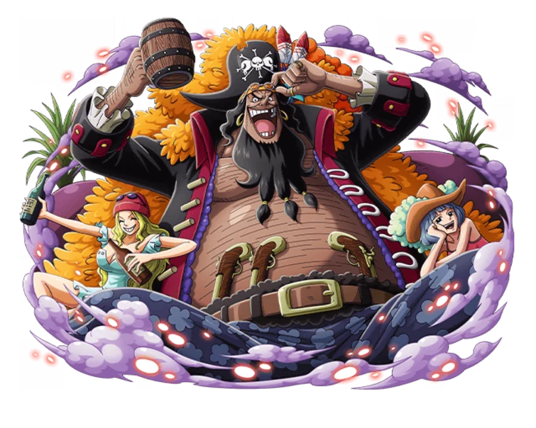
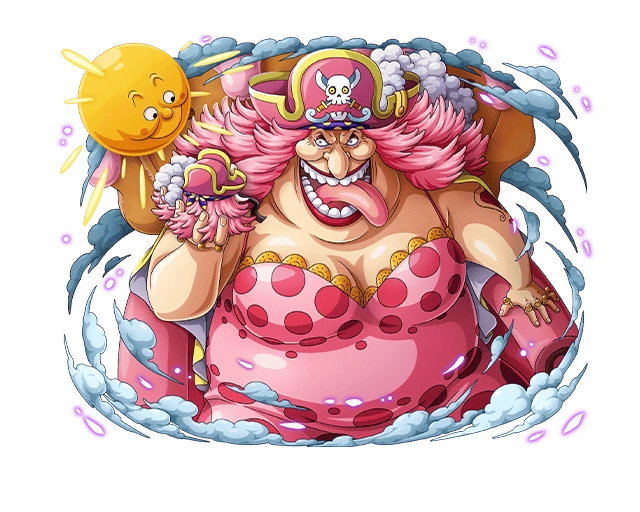
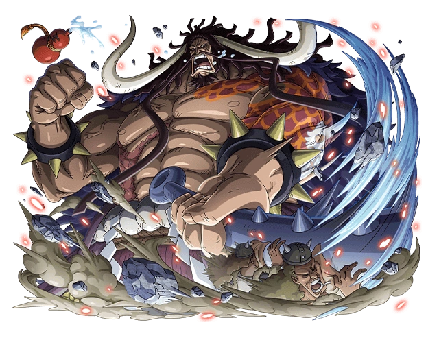
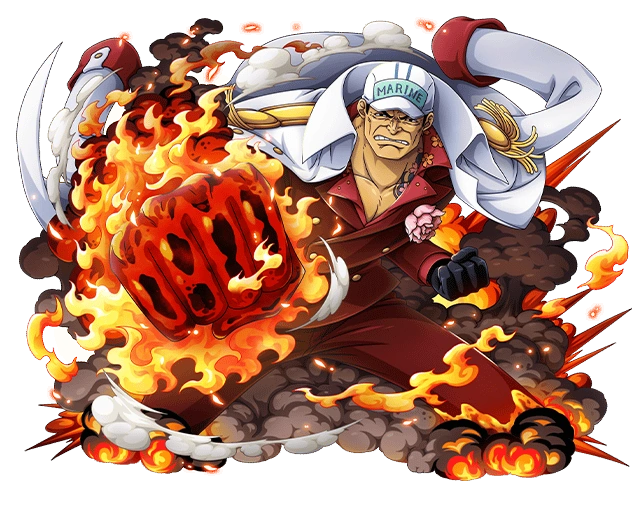

Inimigos
-

Arlong
Arlong, a serra é um homem-peixe tubarão-cerra. Ele era o capitão pirata dos Piratas Arlong, e também um ex-membro dos Piratas Sol e o meio-irmão mais velho de Madame Shyarly. Ele foi o principal antagonista do Arco Arlong Park e tinha a maior recompensa no East Blue, antes de ser derrotado por Monkey D. Luffy
-

Crocodile
"Rei do Deserto" Sir Crocodile é o ex-presidente do misterioso sindicato do crime Baroque Works, o principal antagonista do Arco Alabasta, e o antagonista central da Saga Alabasta. Ele é um dos adversários primários mais duradouros e mais notáveis da série, já que ele foi o primeiro inimigo a dar a Luffy uma derrota completa e absoluta, bem como um dos dois únicos que derrotaram Luffy mais de uma vez. Ele foi originalmente introduzido como um Shichibukai, mas foi destituído de seu título depois de tentar assumir o controle do reino do deserto, Alabasta.
-

Donquixote Doflamingo
Donquixote Doflamingo, apelidado de "Dêmonio Celestial", é o capitão dos Piratas Donquixote, um ex-membro dos Shichibukai e o mais influente Corretor do Submundo sob o codinome "Joker", e é um antigo Nobre Mundial da descendência da Família Donquixote. e um dos mais fortes do anime por causa da sua akuma no mi
-

Barba Negra
Marshall D. Teach, também conhecido como Barba Negra, é o almirante dos Piratas do Barba Negra e um membro dos Yonkou. Ele também é a primeira e única pessoa na história conhecida por ter os poderes de duas Akuma no Mi. Ele começou sua carreira de pirata como membro da 2ª Divisão dos Piratas do Barba Branca, até que ele assassinou Thatch, comandante da 4ª divisão, para obter a Yami Yami no Mi, e em seguida desertou da tripulação. Antes do timeskip, ele manteve brevemente a posição de Shichibukai, após entregar Ace para Marinha.
-

Big Mom
Charlotte Linlin, mais conhecida como Big Mom, é a capitã dos Piratas da Big Mom e uma ex-Yonkou. Ela é a matriarca da grande Família Charlotte, que compõe a infra-estrutura de sua tripulação. Ela também governa Totto Land como sua rainha, buscando formar uma utopia onde todas as raças do mundo possam viver juntas em paz sem sofrer discriminação ou segregação.
-

Kaidou
Kaidou das Feras, também conhecido como a "Criatura Mais Forte do Mundo" é o Governador-Geral dos Piratas das Feras e um ex-Yonkou. Ele e sua tripulação atualmente ocupam o País de Wano em aliança com seu shogun, Kurozumi Orochi, e mais recentemente firmaram uma aliança com a companheira Yonkou Big Mom e sua tripulação, os Piratas da Big Mom. Décadas atrás, antes da formação de sua própria tripulação, Kaidou fazia parte dos lendários Piratas Rocks como um aprendiz.
-

Akainu
Sakazuki, conhecido por seu apelido Akainu, é o atual almirante da frota da Marinha, sucedendo o almirante da frota anterior Sengoku. Durante a primeira metade da série, ele foi um dos três almirantes, e o último a aparecer na série. Ele ascendeu à posição de almirante da frota depois de derrotar Kuzan em um duelo de dez dias que deixou Punk Hazard em seu estado atual, metade congelada e metade em chamas. Uma de suas primeiras decisões foi a de mudar o Quartel General da Marinha para o Novo Mundo, em preparação para a nova era dos Piratas.